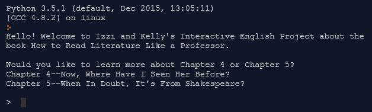

This is an animation of a sprite I created from a photo of my face; the looks and motions were edited via the Scratch website. The script I created includes various Boolean expressions -that are either true or false- and if then else blocks in order to make my sprite appear to wrap around the screen!
View my very first page using Cascading Style Sheets! Amaze at the ice cream background and clickable links and cool table.
Explore the future of America as Donald Trump makes his way towards the presidency! On this adventure, users can interact with the story using the keyboard. Click here to access our SCRUM product backlog!
My partner and I used Python to create an interactive version of my english assignment on chapter 4 and chapter 5 of the book How to Read Literature Like a Professor. Our project has functions, decision points, and more impressively, a while loop (thanks to the help of Mr. Pittman). Choose which chapter summary you want to read, choose which examples you want to delve into, and even choose to give your own examples if you want! Click here to take a look at our flowchart.
{kind=link}